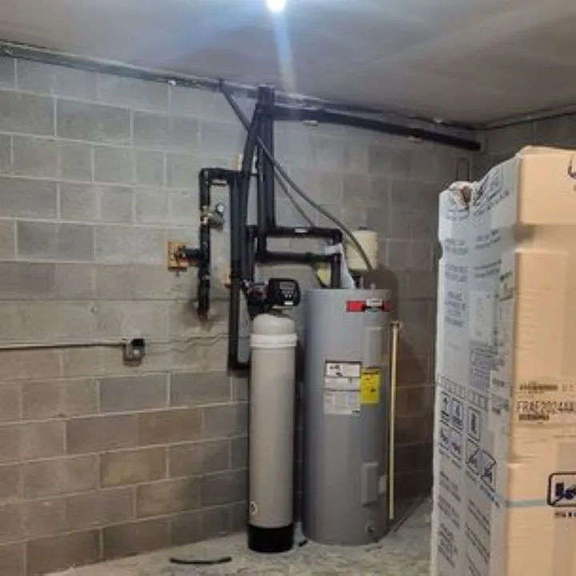
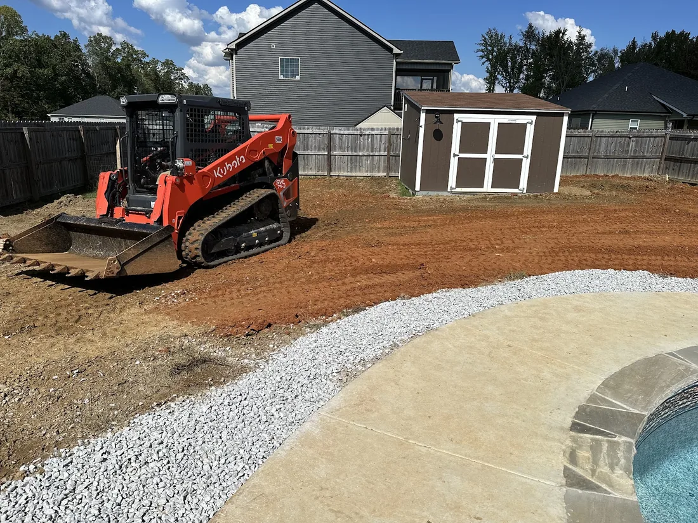

Leaks and pipe repair
Leaking faucets, pipes under the sink, a soft spot in the floor, an old house with corroded lines. Pipe installation and replacement.
From a dripping faucet to a new drain field. The list below comes from Stiffler’s own website and from what the shop says about its jobs in replies to customers.
Leaking faucets, pipes under the sink, a soft spot in the floor, an old house with corroded lines. Pipe installation and replacement.
Kitchen sinks, tubs, toilets and main lines. Drain blockage repair and new drain pipe installation.
Repair and installation, including tankless. Same-day water heater repairs come up again and again in their reviews.
Softeners and under-sink filtration, listed on their own site alongside water heater installation.
Faucet installation, toilet pulls and resets, garbage disposals, hose bibs.
“No problem is too big or small for our experienced team!” Their words, from the old site.



Finding and fixing buried leaks, meter-side repairs, and new lines run across a property.
Septic field line repairs and new drain fields. Their photos show the excavator work too.
Sewer line repair, with a camera down the line when the problem isn’t obvious.



Rough-in and full plumbing for new homes and buildings, and bathroom renovations. Builders and homeowners both show up in their reviews.
“Stifflers Plumbing installed all the plumbing in our new construction home. I will recommend these guys every chance I get!
Exceptionally professional and knowledgeable. They did high quality work on time and came in under budget (the only contractors that came in under budget on our whole home!). …”
“… Ryan and Matthew installed over 200 feet of water line and three frost-proof hydrants for our farm. They showed up on time, were professional, and went above and beyond to get the job done right. Their pricing is very fair, and we couldn’t be happier. …”